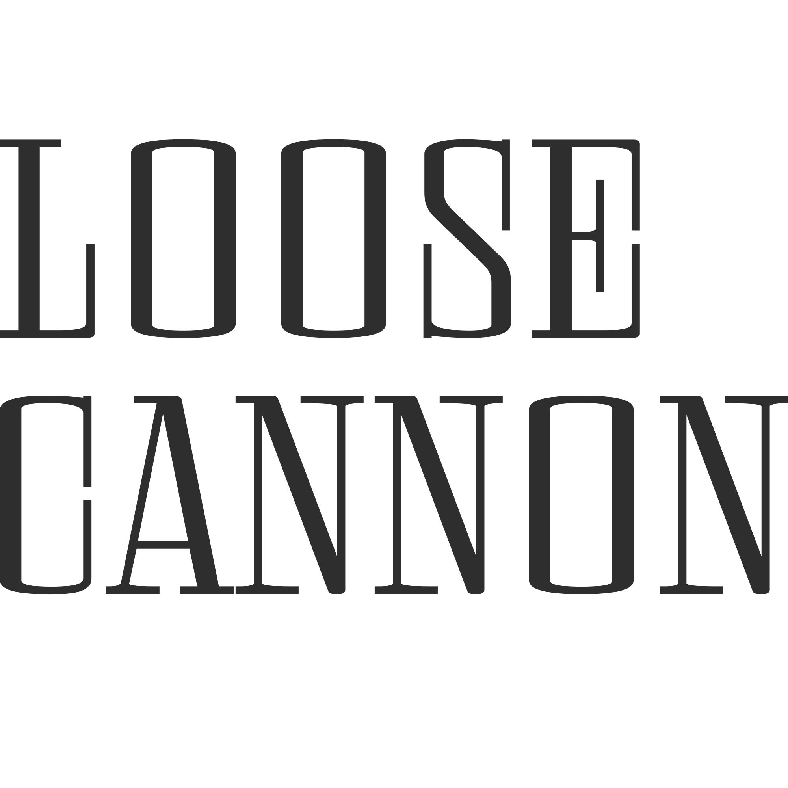
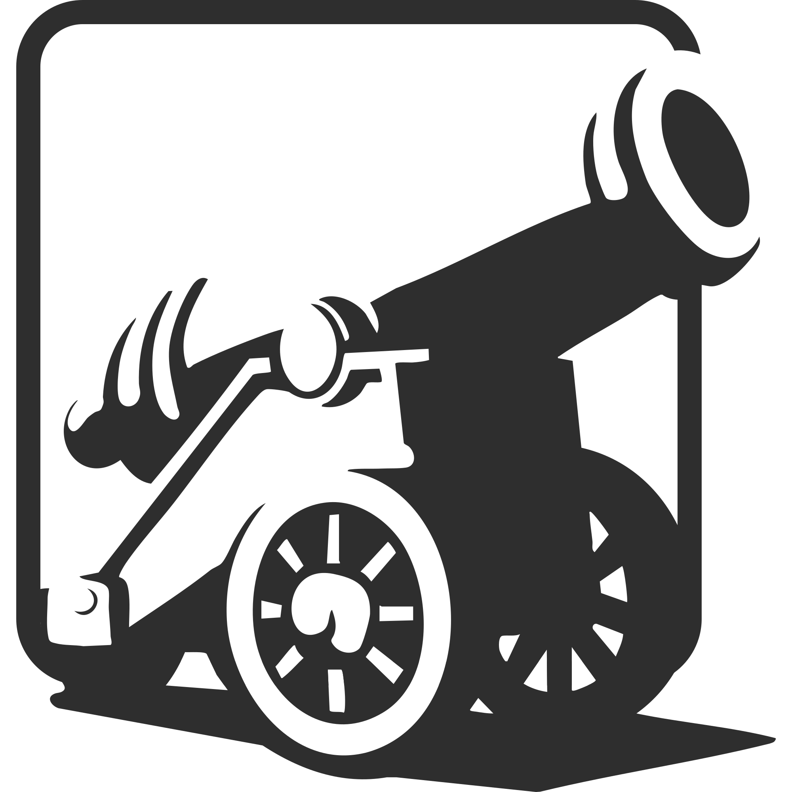

A Brazilian indie studio that doesn't believe in limits and has never dared to label a project as too big.

About us
LooseCannon Game Studio is an independent studio focused on creating unique and memorable experiences. Our games explore different visual styles and mechanics, always aiming for a fun result. We are currently a team of two Brazilian developers, working together to build our projects.
CONTACT
- E-mail: loosecanoongamestudio@gmail.com
- itch.io: loosecannon-gamestudio.itch.io